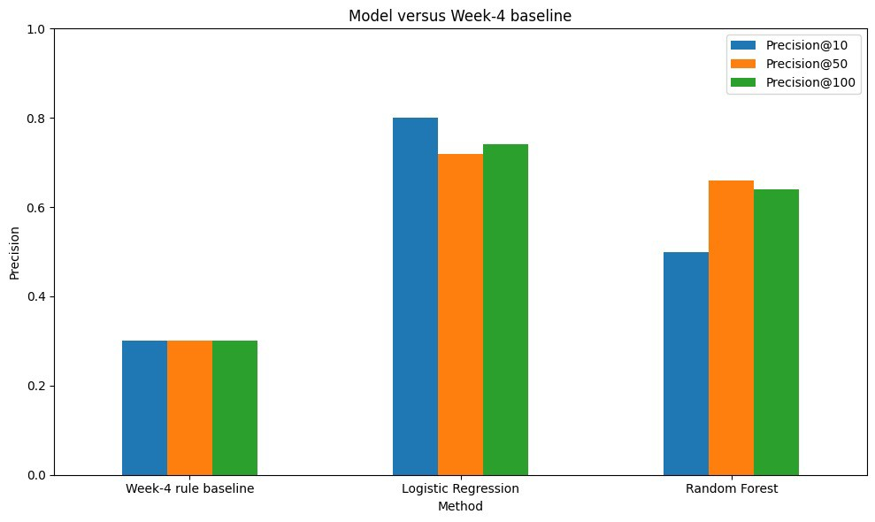
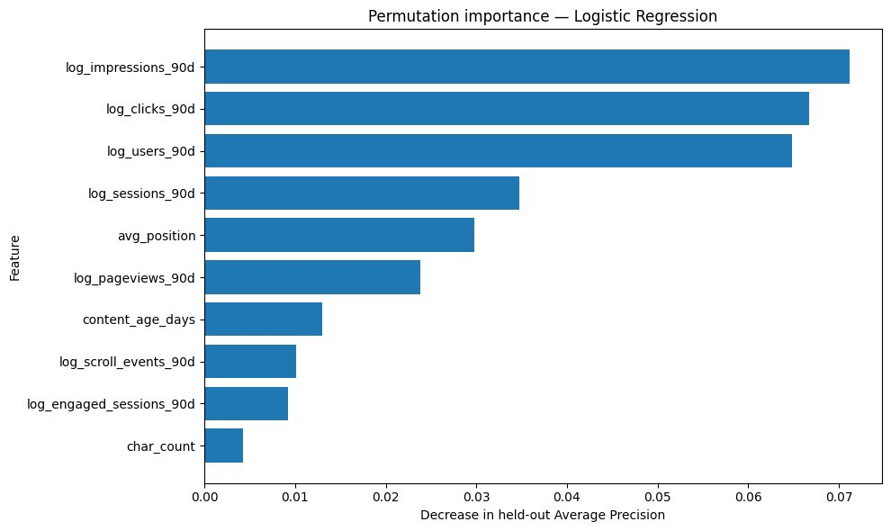
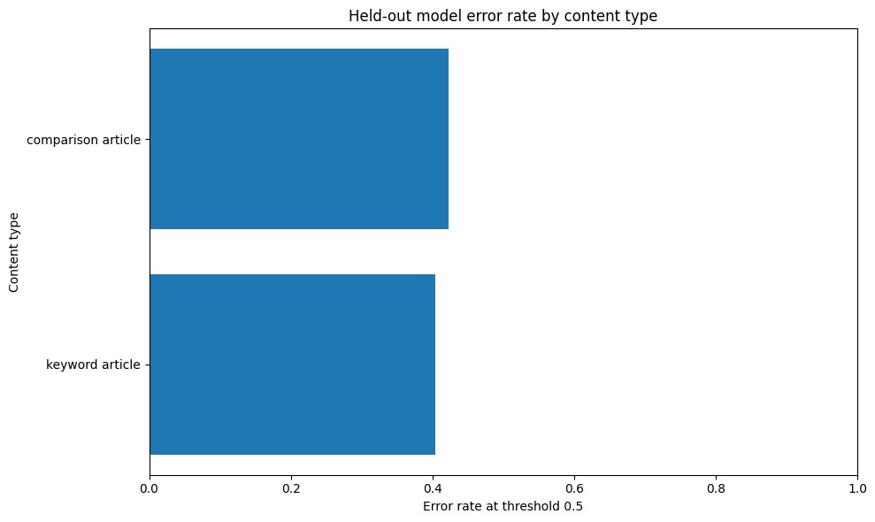

Summary
Abstract
This study asks whether observable content-freshness and search-performance signals can improve the ranking of pages for refresh review compared with a simple stale-and-visible rule. I analyzed 30,000 anonymized content items from 32 pseudonymized clients and evaluated the methods using a grouped client holdout. I compared the Week-4 rule with Logistic Regression and Random Forest on the same test rows, using Precision@10 as the primary operational metric. The selected method, Logistic Regression, achieved a Precision@10 of 0.800, compared with 0.300 for the rule baseline, a difference of +0.500. The results support a directional human-review queue, but they do not prove that content age causes decline or that refreshing a recommended page will improve search performance.
Research question
Introduction and problem statement
Content teams often manage more pages than they can inspect manually. Reviewing every page requires time, while relying only on intuition may cause important opportunities to be missed.
This research supports one practical decision: which anonymized content items should a human reviewer inspect first for a possible refresh?
The output is a ranked decision-support queue rather than an automatic editing system. Each item receives an action score, an action label, and one reason code. A higher score means that the item should be reviewed earlier; it does not mean that it must be rewritten.
Research question:
Can observable content-freshness and search-performance
signals improve refresh-review ranking compared with a
simple stale-and-visible rule?
Dataset
Data
This capstone uses the anonymized FlyRank starter release for the Refresh / Content Opportunity Scoring lane. The dataset contains 30,000 content items from 32 pseudonymized clients.
Unit of analysis
One row represents one pseudonymized content item.
The fields content_id and
client_id are used for grouping,
auditing, and public-safe recommendation examples.
They are not predictive features.
Observed outcome
The observed binary label is equal to one when
trend_direction is
down. The label represents a decline in
recent impression performance relative to the previous
comparison period.
This label is an operational proxy. A downward impression trend does not prove that a page is outdated, inaccurate, or guaranteed to benefit from a refresh.
Signals included
- Trailing search impressions and clicks
- Sessions, users, and engagement measurements
- Average search position and click-through rate
- Content age and days since last update
- Content type and search intent
- Measurement-availability indicators
Deliberate exclusions
-
trend_directionandtrend_pct - Explicit current and previous 30-day fields
- Client and content identifiers as model inputs
- Provider and model names
- Private names, domains, URLs, and search queries
No client names, domains, page URLs, private queries,
credentials, or raw client exports are published.
Approach
Methodology
Transparent baseline
The Week-4 rule marks a content item as eligible for refresh review when:
days_since_last_update >= 91
AND
impressions_90d >= 100
Eligible pages are ranked by visibility. The baseline
reason code is
stale_visible_page.
Models
Two supervised models were trained:
- Logistic Regression as the primary interpretable ranking model
- Random Forest as a nonlinear challenger
Numeric fields were median-imputed inside the model
pipeline. Numeric features were standardized for
Logistic Regression. Categorical values were
one-hot encoded, and highly skewed traffic totals were
transformed using log1p.
Grouped validation
The train-test split was grouped by
client_id. Twenty-four clients were used
for training and eight different clients were used for
testing. No client appeared in both groups.
This design is more honest than a random row split because pages from the same client may share traffic, publishing, measurement, and content patterns.
Metrics
The primary metric is Precision@10, because the operational output is a small queue for human review.
Additional metrics include:
- Precision@50
- Precision@100
- Average Precision
- ROC AUC
The base rate, baseline rule, Logistic Regression, and Random Forest were evaluated on the same held-out rows, label, split, and metrics.
Findings
Results
Logistic Regression produced the strongest top-ten review queue. On the held-out client test set, it achieved Precision@10 of 0.800, compared with 0.300 for the stale-and-visible Week-4 baseline.
Logistic Regression also achieved Precision@50 of 0.720, Precision@100 of 0.740, Average Precision of 0.622, and ROC AUC of 0.625.
Random Forest achieved Precision@10 of 0.500, Average Precision of 0.603, and ROC AUC of 0.612. Although it was more complex, it did not produce a better top-ten queue, so Logistic Regression was retained.
| Method | Precision@10 | Precision@50 | Precision@100 | Average Precision | ROC AUC |
|---|---|---|---|---|---|
| Base rate | 0.517 | 0.517 | 0.517 | 0.517 | 0.500 |
| Week-4 rule baseline | 0.300 | 0.300 | 0.300 | 0.506 | 0.488 |
| Logistic Regression | 0.800 | 0.720 | 0.740 | 0.622 | 0.625 |
| Random Forest | 0.500 | 0.660 | 0.640 | 0.603 | 0.612 |


Historical impressions, clicks, users, sessions, and average position were the most useful held-out predictive signals. Their importance represents association with the observed decline label, not proof that changing these measurements would cause performance to improve.

Error interpretation
False positives are content items ranked as likely declining even though their observed label is not down. Older or highly visible pages may resemble declining pages without actually having the observed outcome.
False negatives are pages with an observed downward trend that receive a relatively low score. These errors may reflect sudden changes, seasonality, client-specific effects, or information absent from the starter release.
Honest framing
Limitations
Proxy outcome
Impression decline does not automatically mean that content is outdated or requires a refresh.
Not causal
The analysis does not test whether refreshing a page causes search-performance recovery.
Snapshot design
The starter release supports diagnostic ranking rather than a strict future forecasting claim.
Seasonality and noise
Demand changes, tracking variation, or ordinary volatility may appear as decline.
Limited clients
The grouped test contains eight pseudonymized clients and may not represent every industry or publishing strategy.
Small top-ten queue
Precision@10 matches the decision but changes by ten percentage points when one item changes.
Missing decision context
The data does not fully represent business value, compliance, factual accuracy, or production cost.
Ranking scores
Scores are used primarily to order pages and are not guaranteed to be perfectly calibrated probabilities.
Action playbook
Ranked recommendations
The selected model produces a public-safe ranked queue containing an action score, one action label, one reason code, and a human verification step.
Refresh review
high_score_stale_visible
High score with stale content and measurable visibility.
Check freshness, intent, seasonality, factual accuracy, completeness, and business value.
Metadata review
visible_low_ctr
Visible position with weak click-through rate and an elevated score.
Inspect the title, description, snippet, and search intent before planning a full rewrite.
Monitor
elevated_score_monitor
Some decline-associated signals are present, but the score is not extreme.
Continue monitoring and check whether the weakness persists.
Protect
healthy_low_score
The item has a comparatively low observed decline score.
Avoid unnecessary changes and continue normal monitoring.
Collect more data
insufficient_signal
Search visibility or position evidence is too limited for confident action.
Check tracking coverage and wait for more evidence before changing the content.
A high model score means
review first, not
refresh automatically.
Open research
Reproducibility
The public repository contains the data contract, transparent baseline, grouped model comparison, final capstone notebook, recommendation logic, metrics, and charts.
The analysis uses Python, pandas, NumPy,
scikit-learn, and Matplotlib with a fixed random seed of
42.
Credit
Acknowledgments and data credit
Built on the FlyRank ML Internship dataset .
The dataset made it possible to practice realistic search-intelligence analysis while protecting client privacy through pseudonymized and public-safe fields.